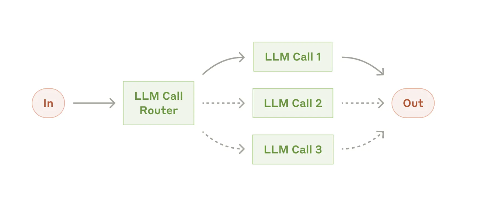
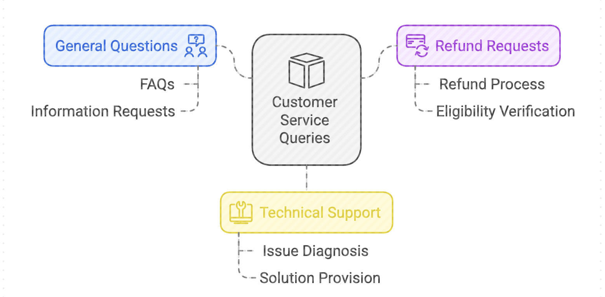
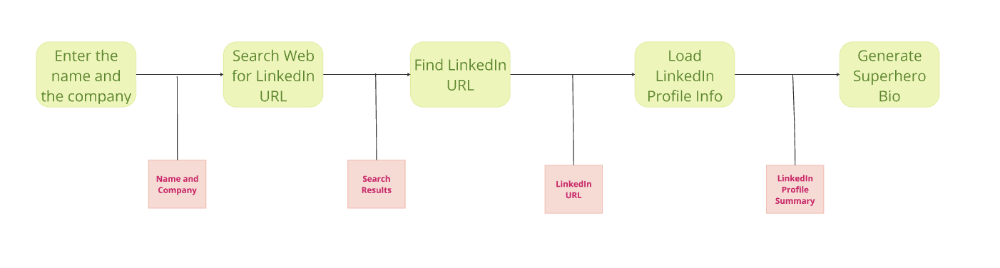
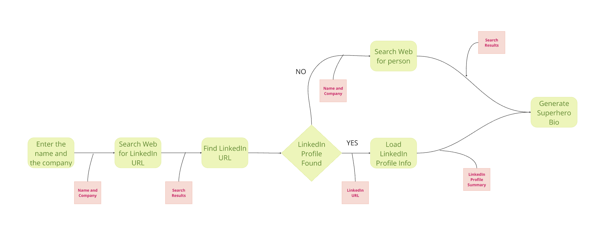
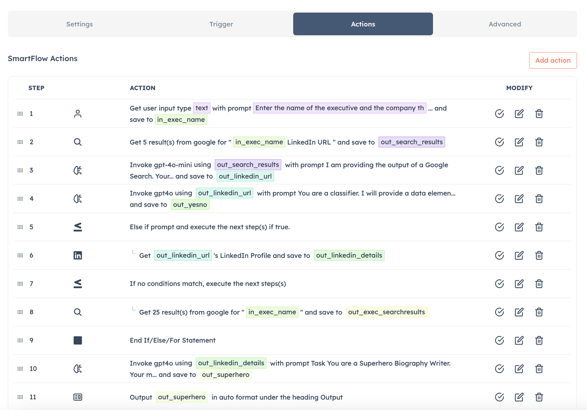
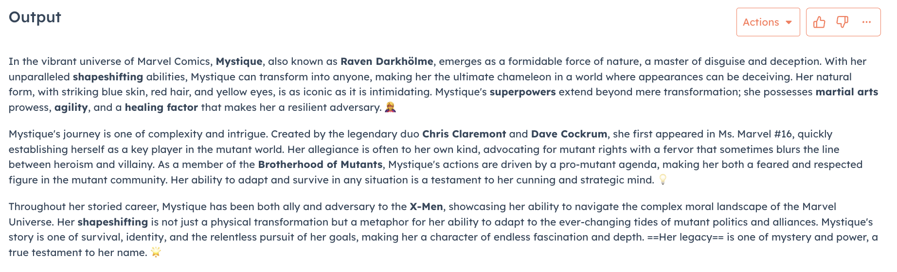

Anthropic Agentic Systems: A Five-Part Exploration is sponsored by Agent.ai - Discover, connect with and hire AI agents to do useful things.
Whether we like it or not, agents are going to be co-existing with us. While not everyone will be building agents, I think it helps everyone to get an understanding of what these agents look like under the covers. Anthropic came out with a white paper on 5 patterns that they see as common when building agentic systems. This series is my attempt to demystify agent building with a simple example and a non-technical explanation.
The five patterns for Agentic Systems that Anthropic is seeing in production are -
Routing
Parallelization
Orchestrator-Workers
Evaluator-Optimizer
This is the second post in the series and takes a practical deep dive into the Routing pattern using Agent.ai.
Routing classifies an input and directs it to a specialized followup task. This workflow allows for separation of concerns, and building more specialized prompts.

In plain english, when a request to do some work comes in, there is a 'router' that classifies what the work is and then routes to the right LLM or Tool to do the work. Here is an example of how this looks like for Customer Services queries.

Going back to our Superhero Biography example from the previous post -

In the above example, what if we searched the web and in the search results we could not find the LinkedIn URL of the person? That is a good example where we could use an LLM call router to route the flow down a different path. So in this case the flow would look like -

In the above example, we are using the LLM Router (LinkedIn Profile Found - the diamond) to check the output of the action that found the LinkedIn URL and if we found the LinkedIn URL we are routed down the usual path, else we are routed down another path and in this new path we search the web for the person and use the results from the web search to Generate their Superhero Bio.
So this is what the agent in Agent.ai looks like -

Step 4 is the LLM classifier that looks at the output from Step 3 to determine if a LinkedIn URL was found or not. This is what the prompt for the classifier looks like. This is the power of using the LLM as a classifier as it can be given text instructions to understand your request and then generate an output you can work on.
Based on that we have Step 5 which is an IF statement that checks to see the LinkedIn URL was found and then gets the Profile information (Step 6), else it goes to Step 7 and does a Google search (Step 8). Step 10 then uses the output to generate the Bio.
So I decided to test this agent out and what I realized quickly is that it is hard to find real people who don't have a LinkedIn Profile. Here are the people who have LinkedIn profiles - William Shakespeare, Captain America!!! So sticking with the Superhero theme I tried Mystique from the X-Men and here is her Superhero Bio.

Hope this fun example helps make this dry topic a bit more understandable and fun to learn!!
Subscribe to the newsletter to understand more about building agentic systems and if you are a business stakeholder that wants to play around with building agents, go to Agent.ai and sign up. It is not that complicated.